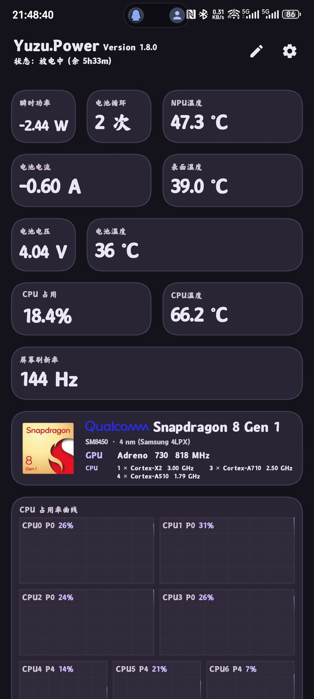

ANDROID · 正式版 1.8.0
每一瓦，都摊在明面上。
Yuzu.Power（柚.Power）是哔哩哔哩 UP 主 Sakula_小柚柚为数码爱好者做的轻量安卓应用。瞬时功率、电压、电流和温度在同一屏；1.8.0 可以自己排组件、开悬浮窗，并把一次充放电记成曲线。
状态：放电中
- 当前版本
- 1.8.0
- 作者标注覆盖
- 98.6%
- 平台
- Android

主界面长什么样
下面的数字只在浏览器里走动，用来看布局。负值是耗电，正值是充入。它不会读取这台设备的电池，真正的读数来自你的手机。
- 组件可以加、可以删，主屏按你自己的习惯排。
- 电流单位跟随系统，也可以在应用里改 μA / mA。
- 部分温度和处理器数据需要 Shizuku 授权。
浏览器里的仪表
示意数据 · 不会访问本机电池
Yuzu.Power
状态：放电中
瞬时功率
-2.70 W
电池循环
2 次
NPU 温度
47.3 °C
电池电流
-0.67 A
表面温度
39.0 °C
电池电压
4.04 V
电池温度
36 °C
CPU 占用
18.4%
CPU 温度
62.0 °C
电池状态
良好
屏幕刷新率
144 Hz
1.8.0 里实际有的
按发布说明和应用界面整理，没有额外编造的传感器。
-
01 主屏
组件自己排
功率、电流、电压、电量循环、刷新率可以留，也可以换成内存占用、在线核心、单核频率。编辑时能加、能删、能拉大小。
-
02 温度
电池、表面、CPU、NPU
发布说明写明：温度信息需要 Shizuku。界面里也会标出，有的组件可能要通过 Shizuku 才取得到部分数据。
-
03 处理器
型号、频率和每核占用
主屏可以放芯片信息，以及各核当前频率、上限和占用曲线。读不到时保持空白，不会拿假数据填上。
-
04 校准
单独的校准界面
校准过程中仍能看到功率、电流、电压和电荷量。1.8.0 起这项和界面重构一起加上。
-
05 悬浮窗
别的应用上面继续看
展开态和收起态各有一套布局，深色或浅色，大小可调，也能存成方案。需要系统允许「显示在其他应用上层」。
-
06 会话
一次充放电，一条曲线
记下起止电量、时长、每小时耗电、峰值和平均功率、电流、温度，以及电荷量变化。曲线可以对照功率、温度和电量。
-
07 常驻
灵动岛和后台
仓库说明里：国产机的灵动岛，以及部分第三方灵动岛应用，可以显示实时功率。离开界面后仍尽量保持读取。
-
08 机型
单位和特殊设备
自动采用系统给出的电流单位。OPPO 系的单位差异做了单独处理，无电池设备也有专门适配。中兴、努比亚、红魔上效果最佳。
界面
点开可看大图
机型，按作者原文
仓库写明：这是新一代轻量查看器，对主流手机的支持率达到 98.6%。中兴、努比亚、红魔上运行效果最佳。OPPO 系统的电流单位做了特别处理，没有电池的设备也能看。
部分异形屏仍可能显示不佳。1.3.0 优化过一批；如果还有偏差，欢迎反馈。
- 98.6%作者标注的主流机型支持率
- 中兴 / 努比亚 / 红魔说明里效果最佳的一批
- OPPO 系电流单位单独适配
- 无电池设备也可以查看功率
-
1.8.0
当前正式版。应用全面重构，加入校准、CPU 信息（温度需要 Shizuku）、界面自定义和悬浮窗，并更新了关于页里的官网地址。升级前请备份充电数据，安装后建议清除数据。
-
1.4.0
重构界面，并加入软件优化。如果卡在优化界面进不去，到系统里清除本应用数据后再打开。
-
1.3.0
优化部分异形屏显示异常，并补充了第三方灵动岛进度的文字说明。
-
1.2.0
修复部分界面返回时卡顿或黑屏，并重新排版了文字。
-
1.0.0
打磨约一个月、经过多轮版本后的第一个正式版。
致谢
名单来自应用「关于」页，排名不分先后。
- 作者
- Sakula_小柚柚
- 图标设计与制作
- 九烨
- 宣传
- 时葱葱呀zZ
- 资金援助
- 黑衣清衫，牙科么肆么_免费方式，嘉豪
- 测试
- 时葱葱呀zZ，Key，黑衣清衫，不是夕瓜我不吃，牙科么肆么_免费方式
常见问题
这是 Switch 模拟器吗？
不是。Yuzu.Power 只记录手机的充放电功率。名字里的 Yuzu 来自作者的「柚」，和任天堂主机、游戏模拟器没有关系。
为什么有的温度是空的？
1.8.0 发布说明写明，温度信息需要 Shizuku 权限。编辑组件时，应用也会提示：该组件可能需要通过 Shizuku 获取部分数据。
支持哪些手机？
安卓应用。作者在仓库说明里写，主流机型支持率 98.6%，中兴、努比亚、红魔上效果最好，并为 OPPO 系不同的电流单位做了适配。部分异形屏仍可能显示不佳。
功率单位看起来不对？
应用会自动识别电流单位。如果显示异常，可以在设置里手动切换 μA / mA。
安装包从哪里来？
本页不托管文件。1.8.0 的安装包在 GitHub Releases，文件名 Yuzu.Power_1.8.0-PL.apk，约 18.9 MB。请只从该发布页下载。
发现问题怎么说？
可以到 GitHub Issues，或通过作者的哔哩哔哩主页反馈。若某次问题被采纳修正，作者说过你可能会出现在贡献者名单里。